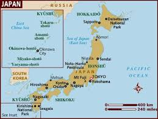
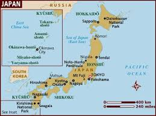

suffered recurring economic crises during most of the 20th century, but now beginning a transformation
towards a more liberal economic order, taking advantage of its rich natural resources, highly literate
population, export-orientation, and diversified industry
GDP(Purchasing Power Parity)
$5.443 trillion (2017 est.)
GDP per capita(Purchasing Power Parity)
$42,900(2017 est.)
Exports
$688.9 billion(2017 est.)
partners:
US 19.4%
China 19%
South Korea 7.6%
Hong Kong 5.1%
Thailand 4.2%
Imports
$644.7 billion(2017 est.)
partners:
China 24.5%US 11%Australia 5.8%South Korea 4.2%Saudi Arabia 4.1%
 
